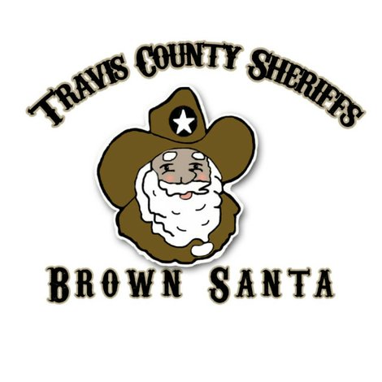

Brown Santa is a program that provides assistance to underprivledged children and families during the holidays by donating gifts and food boxes. These gifts come fully wrapped and from Santa, allowing less fortunate families the opportunity to celebrate the holidays with gifts under the tree. Volunteers collect, organize, and distribute these donated items to the families. For multiple years, I have volunteered at Brown Santa as an organizer, picking gifts out for children and wrapping them. I find Brown Santa not only fulfilling, but a great way to give back to the community.

Camp Beyond Me is a Catholic service camp for kids in grades 1-8. At Camp Beyond Me, kids engage in meaningful activites that strengthen their connection with God by helping those in need. These activites include things like organizing food drives, putting together survival kits, and making sandwhiches for the homeless. At Camp Beyond Me, I worked as a counselor, accompying groups of kids to their activites and helping them safely travel across campus. Camp Beyond Me was a great way to give back to my church and help kids grow stronger in their faith.